From Nepotic to Dynastial Communism
In the Eastern and Central Europe, occupied in the 1960s by the USSR, we were tout in schools that under Communism people will be equal and each of them will get in function of his needs. Because obviously the reality was far away from it, we were told also that the happy communism era could not be reached immediately but just after a struggle against all kind of enemies, by personal privations and a hard work.There were some wise and experienced man and women who knew how to lead us in this struggle, and strangely enough, they were often relatives. Please find below some of the best known examples of such leaders. Of course, the real reason of nepotism was that the family relationship, like for any mafia, presented the guarantee of the "I know you well, but don't forget that you are who you are and where you are thanks to me. If I fall, you fall with me!".
Vladimir Lenin and Nadezhda Krupskaya in Russia/USSR
Nadezhda Konstantinovna Krupskaya (1869 - 1939), revolutionary, educator, head of Glavpolitprosvet (the Chief Committee for Political Education) and deputy head of the Commissariat of Enlightenment, full member of the Central Committee of the Communist Party (1927 - 1939), wife of Vladimir Ilich Lenin. Under the rule of Enlightement (Narkompros) commissars many churches and monasteries were destroyed and priests killed or imprisoned. It was also the first institution that played a major role in the censorship of press and art. Source
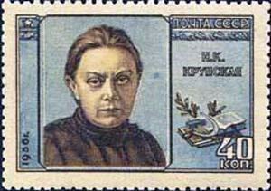
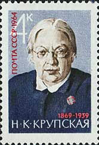
Lenin was the first and will hopefully remain the last communist leader who was embalmed, the pharaohs of the ancient Egypt alike.


Mao Zedong and Jiang Qing in P.R. of China
Jiang Qing. (born 1914?, Zhucheng, Shandong, China — died May 14, 1991, Beijing) Third wife of Mao Zedong and member of the radical Gang of Four. Jiang married Mao in the 1930s but entered politics only in the 1960s. As first deputy head of the Cultural Revolution, Jiang acquired far-reaching powers over China's cultural life and oversaw the total suppression of a wide variety of traditional cultural activities.
In 1966, Mao and Jiang launched their attack on Chinese culture, upon Mao's political enemies, and, many said, upon Jiang Qing's personal enemies.
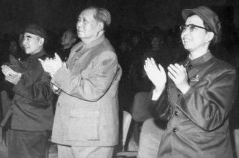
Jiang Qing used her new political power to avenge herself upon many who had slighted her in the past, going back to the conflicts of her youthful career as an actress in Shanghai.
On September 9, 1976, when Mao died, Jiang Qing and her allies strove to move troops into position and create a documentary record that demonstrated Mao's desire for Jiang Qing to succeed him. By 1980, Deng Xiaoping had established his own power, and she and the others went on trial for crimes committed during the Cultural Revolution.
Because Deng and his supporters did not dare attack Mao directly, they blamed the Cultural Revolution on individuals like the "Gang of Four." Source.Nicolae, Elena and Nicu Ceausescu in Romania
Elena Ceausescu (Romanian pronunciation: (January 7, 1916 – December 25, 1989) was the wife of Romania's Communist leader Nicolae Ceausescu, and Deputy Prime Minister of Romania.
In June 1973 she became a member of the Politburo of the Romanian Communist Party becoming the second most important and influential person after Ceausescu himself. She was deeply involved in party administration alongside her husband. In November 1974, at the 11th party congress, she was made a member of the (renamed) political executive committee and in January 1977 became a member of the highest party body, the Permanent Bureau of the Political Executive Committee. In March 1980, she was made a First Deputy Prime Minister.
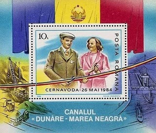
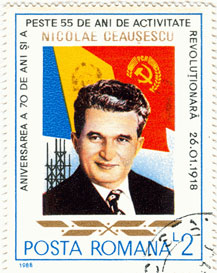
Elena Ceausescu is usually assumed to be responsible for two policies which in the 1970s and 1980s, coupled with some of her husband's policies, were disastrous. Romania under the Ceausescu regime outlawed both abortion and birth control, with Elena Ceausescu's demanding by law that women under the age of 40 to have at least four children, later five. Source
Nicu Ceausescu (September 1, 1951 – September 26, 1996) was the third child of Romanian leader Nicolae and Elena Ceausescu. He was a close associate of his father's political regime and considered the President's heir apparent.
He was involved in Uniunea Tineretului Comunist while a student, becoming its First Secretary and then Minister of Youth Issues, being elected to the Central Committee of the Romanian Communist Party in 1982.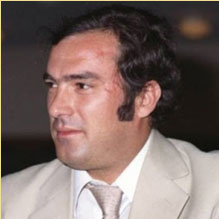
Toward the end of the 1980s, he was made a member of the Executive Committee of the Romanian Communist Party and in 1987 its leader for Sibiu County, being prepared by his parents to be Nicolae Ceausescu's successor.] Source
The Kim Dynasty in North Korea
"The life of a North Korean is not about living, but about how to sustain life", Jang Jin-sung
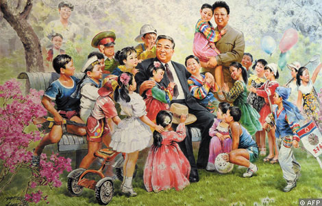
Kim Il-sung (15 April 1912 – 8 July 1994) was a Korean communist politician who led North Korea from its founding in 1948 until his death in 1994.[2] He held the posts of Prime Minister from 1948 to 1972 and President from 1972 to his death. He was also the General Secretary of the Workers Party of Korea.
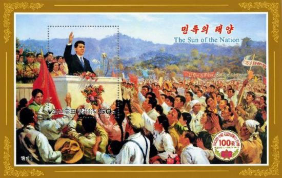
During his tenure as leader of North Korea, he ruled the nation with autocratic power and established an all-pervasive cult of personality. From the mid-1960s, he promoted his self-developed Juche variant of communist national organisation.
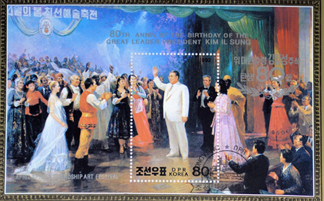
There are over 500 statues of Kim Il-sung in North Korea.
Following his death in 1994, he was succeeded by his son Kim Jong-il. North Korea officially refers to Kim Il-sung as the "Great Leader" and he is designated in the constitution as the country's "Eternal President". His birthday is a public holiday in North Korea. SourceKim Jong-il (also written as Kim Jong Il; born 16 February 1941) is the leader of the Democratic People's Republic of Korea (North Korea). He is the Chairman of the National Defense Commission, General Secretary of the Workers' Party of Korea, the ruling party since 1948, and the Supreme Commander of the Korean People's Army, the fourth largest standing army in the world.
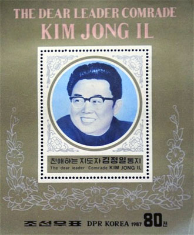
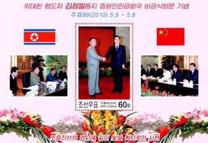
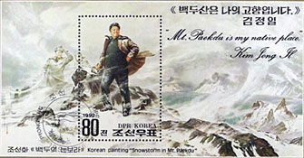
In April 2009, North Korea's constitution was amended and now implicitly refers to him as the "Supreme Leader". He is also referred to as the "Dear Leader", "our Father", "the General" and "Generalissimo". His son Kim Jong-un was promoted to a senior position in the ruling Worker's Party and is heir apparent. Source
Kim Jong-u, also known as Kim Jong-eun or Kim Jung-eun, formerly Kim Jong-woon or Kim Jung-woon (born 1983 or early 1984), is the third and youngest son of Kim Jong-il with his late consort Ko Young-hee. He is a Daejang, the equivalent to an American four-star general in the Korean People's Army. Recent actions, symbolic and overt, taken in late 2010 by current dictator and "Dear Leader" of North Korea (officially, the People's Democratic Republic of Korea), Kim Jong-il, strongly indicate that Kim Jong-un is now the heir presumptive to the leadership of the nation upon Kim Jong-il's death, incapacity, or far less likely, deliberate abdication. It has been claimed that he studied computer science privately in Korea. On 28 September 2010 he was named vice chairman of the Central Military Commission and appointed to the Central Committee of the Workers' Party, in an apparent nod to become the successor to Kim Jong-il.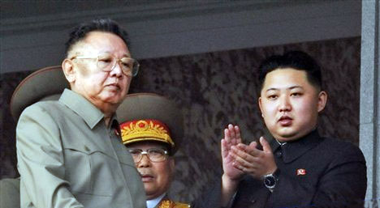
On 10 October 2010, alongside his father the North Korean leader, Kim Jong-il, Kim Jong-un attended the ruling Workers' Party's 65th anniversary celebration. This was seen as fully confirming his position as the next leader of the Workers' Party. Unprecedented international press access was granted to the event, further indicating the importance of Kim Jong-un's presence.
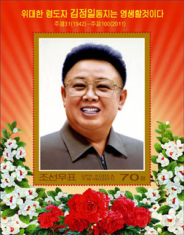
G
R
E
A
T
L
E
A
D
E
R
K
I
M
J
O
N
GI
L
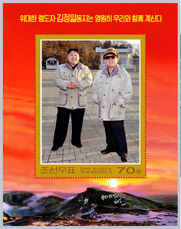
W
I
L
LB
EW
I
T
HU
SF
O
R
E
V
E
RAs expected and prepared in advance, Kim Jong-un was officially declared the supreme leader, following the state funeral for his father on 28 December 2011. On 30 December 2011 the Politburo of the Workers' Party of Korea formally appointed Kim Jong Un as the Supreme Commander of the Korean People's Army. On 11 April 2012, the 4th Party Conference elected him to the newly-created post of First Secretary of the Workers' Party of Korea. Source . The above miniature sheets are a further illustrations of the perpetuation of the dynastical communism in North Korea.


|
Published: 02/21/2011. Revised: 1/11/2024. |